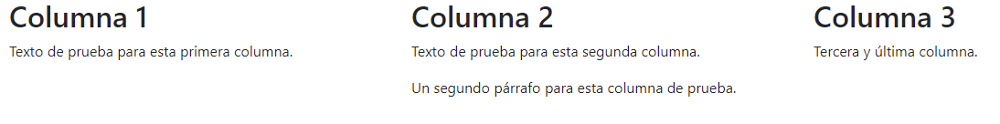
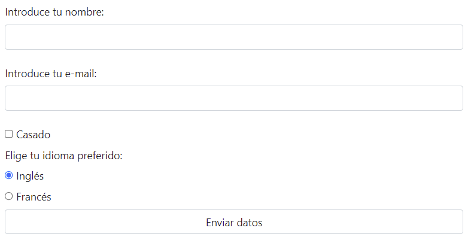

16. Frameworks de Diseño: Bootstrap 5.3
Bootstrap es el framework frontend más popular y consolidado del mundo para diseñar sitios web ergonómicos, rápidos y 100% responsivos (mobile-first). Proporciona un completo sistema de rejilla, clases de utilidad y componentes interactivos accesibles.
1. Integración en Proyectos Web
Para utilizar Bootstrap 5.3 en cualquier proyecto web, basta con vincular su hoja de estilos compilada en el <head> y su archivo JavaScript al final del <body> (a través de un CDN de alta velocidad o descargando los archivos locales):
<!-- 1. CSS de Bootstrap en el <head> -->
<link href="https://cdn.jsdelivr.net/npm/bootstrap@5.3.3/dist/css/bootstrap.min.css" rel="stylesheet">
<!-- 2. JS Bundle (incluye Popper para dropdowns) antes del cierre de </body> -->
<script src="https://cdn.jsdelivr.net/npm/bootstrap@5.3.3/dist/js/bootstrap.bundle.min.js"></script>2. El Sistema de Rejilla (Grid de 12 Columnas)
La rejilla de Bootstrap se basa en Flexbox y consta de tres niveles jerárquicos: Contenedor (.container o .container-fluid) → Fila (.row) → Columnas (.col-*). Cada fila se subdivide en un total de 12 columnas:
<div class="container">
<div class="row g-3">
<!-- 3 columnas de 4 casillas cada una en pantallas medianas (4 x 3 = 12) -->
<div class="col-md-4"><div class="p-3 bg-white border">Columna 1</div></div>
<div class="col-md-4"><div class="p-3 bg-white border">Columna 2</div></div>
<div class="col-md-4"><div class="p-3 bg-white border">Columna 3</div></div>
</div>
</div>
Márgenes y Rellenos (m-*, p-*)
Escala de 0 a 5 con modificadores direccionales:
m-3/p-3: Margen o padding general (1rem = 16px).mt-*(top),mb-*(bottom),ms-*(start/left),me-*(end/right).mx-auto: Centrado horizontal automático de bloques.
Espaciado de Rejilla (gap-*, g-*)
Separación automática entre filas y columnas de la rejilla:
g-3/g-4: Margen de separación uniforme entre columnas.row.gy-4(espacio vertical) ygx-3(espacio horizontal).gap-*: Espaciado directo para contenedoresd-flex.
.container, .row y .col-*.3. Formularios y Botones Ergonómicos
Bootstrap transforma los controles toscos de HTML en elementos modernos y accesibles con clases especializadas:
<form>
<div class="mb-3">
<label for="email" class="form-label">Correo electrónico:</label>
<input type="email" class="form-control" id="email" placeholder="usuario@ejemplo.com">
</div>
<div class="form-check mb-3">
<input type="checkbox" class="form-check-input" id="recordar">
<label class="form-check-label" for="recordar">Recordarme</label>
</div>
<button type="submit" class="btn btn-primary shadow-sm">Enviar datos</button>
</form>
Paleta Semántica de Botones (.btn-*)
4. Componentes Interactivos Clave
Barras de Navegación (.navbar)
Soporte completo para menú hamburguesa desplegable (navbar-toggler), listas colapsables y menús dropdown.

Alertas e Insignias (.alert / .badge)
Mensajes informativos contextuales y etiquetas numéricas o de estado visualmente atractivas.